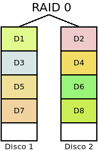
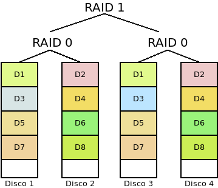
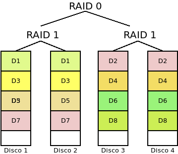

5.4. RAIDs¶
5.4.1. Introducción teórica¶
Un RAID puede definirse como un sistemas de almacenamiento que, mediante técnicas hardware o software, utiliza de manera conjunta varios discos para distribuir los datos entre todos ellos con la finalidad de:
- Introducir redundancia para hacer el sistema tolerante a fallos, de manera que aunque falle algún disco, el sistema pueda seguir accediendo a los datos sin interrupciones
- Aumentar la capacidad de almacenamiento, esto es, constituir una unidad de almacenamiento mayor que cada una de los discos físicos por separado.
- Aumentar el rendimiento en las lecturas y escrituras.
Dependiendo de cuál sea el RAID que se implemente se lograran alcanzar uno o más de estos propósitos; y el resultado de su implementación será la creación de un dispositivo virtual sobre el que el sistema operativo podra crear particiones y sistemas de archivos.
Tipos de RAIDs
Hay diversos tipos o niveles de RAIDs, para cuyas descripciones llamaremos s a la capacidad del disco físico más pequeño y n al número de discos que lo conforman:
- RAID 0 (o Volumen dividido)
Se forma con dos o más discos entre los cuales se distribuye equitativamente la información sin incluir información redudante.
Es conveniente, como en el resto de tipos, que los discos sean de la misma capacidad, ya que sólo es aprovechable cada disco hasta la capacidad del más pequeño. En lo referente a los propósitos de RAID:
- El sistema no es tolerante a fallos, puesto que no existe redundancia. En consecuencia, no puede romperse ningún disco. Y es más, cuanto mayor sea el número de discos, menos fiabilidad tendrá el sistema, ya que aumenta la probabilidad de que uno de ellos falle y se desbarate toda la información.
- La capacidad del conjunto es \(c*s\).
- Mejora el rendimiento tanto en la lectura como en la escritura, ya que se puede leer y escribir simultáneamente en los discos.
- RAID 1 (o Espejo)
Se forma con dos o más discos de modo que lo que se escribe en uno se replica en todos los demás.

En este caso, el conjunto es altamente redundante tanto más cuantos más discos haya, a costa de sacrificar capacidad:
- El sistema es capaz de soportar la ruptura de \(n-1\) discos sin que se produzca pérdida de información.
- No aumenta la capacidad del conjunto que seguirá siendo la capacidad individual de uno de los discos, \(s\).
- Aumenta el rendimiento de las lecturas, ya que pueden realizarse lecturas simultáneas, pero no el de escritura.
- RAID 0+1 (o Espejo de divisiones):
Es un sistema híbrido formado con un mínimo de cuatro discos, de manera que primero se crean dos dispositivos RAID 0 que a su vez se toman para constituir un RAID 1.
Con esta disposición:
- Hay tolerancia a fallos, aunque sólo pueden fallar discos de un mismo RAID 0. Si fallan discos de distinto RAID 0, el sistema colapsa.
- Aumenta la capacidad hasta \(\frac{n}{2} * s\).
- Hay mejora en el redimiento de lecturas y escrituras.
- RAID 1+0 (o Divisiones en espejo o RAID 10):
El sistema es parecido al anterior, pero se invierten los niveles: primero se hacen dos divisiones cada una de las cuales la constituyen discos en RAID 1 y con estas dos divisiones se forma un RAID 0. Como en el caso anterior requieren al menos cuatro discos:
Esta disposición sopone:
- Gran toleracia a fallos, ya que el sistema falla solamente cuando fallan todos los discos de una misma división.
- Se duplica la capacidad individual: \(2*s\).
- Hay mejora en el rendimiento de las lecturas y las escrituras,
- RAID 5
Es un sistema de al menos tres discos fisicos, de manera que la información se distribuye en todos ellos, excepto en uno en el que se incluye información de paridad, por lo que es posible recuperar la información ante el fallo de uno de los discos. La base del cálculo de la paridad es la operación lógica XOR que se caracteriza porque cuando el número de 1 en los operandos es impar el resultado es 1 y, cuando es par, 0. En consecuencia, suponiendo que los operandos sean bits, obtenemos la siguiente tabla:
O1 O2 O2 O1⊕O2⊕O3 0 0 0 0 0 0 1 1 0 1 0 1 0 1 1 0 1 0 0 1 1 0 1 0 1 1 0 0 1 1 1 1 en la que podremos darnos cuenta, que tapemos la columna que tapemos, podemos deducir sus valores aplicando la operación XOR a los valores de las columnas aún visibles. En un RAID 5 el cálculo de la paridad es más complejo, ya que tal cálculo se hace a nivel de bloques y el bloque de paridad se distribuye equitativamente entre todos los discos físicos.

En este tipo:
- Es tolerante a fallos en la medida, en que la paridad permite que se pueda estropear un único disco.
- Aumenta la capacidad, ya que la paridad sólo ocupa el equivalente a un disco físico. Por tanto, obtendremos una capacidad de \((n-1)*s\).
- No hay mejora en el rendimiento de las escrituras, y hay una penalización en las escrituras, ya que una escritura implica leer datos del resto de discos para generar la paridad y escribir ésta.
Variantes de este nivel son:
- El RAID 4 en que la información de paridad se almacena siempre en el mismo disco.
- El RAID 3 en que ocurre lo mismo, pero además, los datos se dividen en bytes y no en bloques.
- El RAID Z, que es implementado por el sistema de fichero ZFS y es semejante al RAID 5, pero que añade variantes para mejorar el rendimiento en las escrituras.
- RAID 6
Es parecido a un RAID 5, pero genera dos bloques de paridad y no uso sólo. Por tanto, el número mínimo de discos para constituirlo es 4. En él, se sacrifica la capacidad por el aumento de fiabilidad, ya que pueden fallar hasta dos discos:
- Tolera que fallen hasta dos discos.
- Aumenta la capacidad, hasta \((n-2)*s\).
- Presenta los mismos incovenientes de rendimiento que su primo hermano el RAID5: no mejora las operaciones de lectura y penaliza las de escritura.

Particularidades
Sea cuál sea la implementación y el nivel del RAID, hay una serie de particularidades que comparten todos los sistemas RAID:
- Al constituirlos es necesario que se creen una serie de estructuras de metadatos a semejanza de lo que ocurre con los sistemas de ficheros.
- Habilitan algún mecanismo para advertir al administrador de la rotura de disco, a fin de que este sea diligente en su sustitución. Estos mecanismos pueden ser muy variados (pitidos, leds), pero suelen incluir el envío de un correo electrónico de aviso.
- Al reemplazarse un dispositivo defectuoso por uno nuevo, se desencadena un proceso de recuperación para volver a la situación previa a la rotura.
- Para minimizar el tiempo de sustitución de un disco defectuoso, algunos sistemas incorporan un dispositivo de reserva (hot spare) que se encuentra conectado pero inactivo, por lo que no forma parte efectiva del RAID. En el momento en que se detecta una avería, el disco de reserva se incorpora al RAID y comienza inmediatamente el proceso de recuperación. La labor del administrador consistirá en añadir al sistema un nuevo disco de reserva.
Técnicas de implementación
Hay tres estrategias para la implementación de un sistema RAID:
- Mediante controladora hardware
Por lo general, a una tarjeta de expansión que hace las veces de controladora de disco se le conectan los discos físicos que consituirán el RAID. En este caso, la configuración se establece mediante un firmware particular de la propia controladora y se carga con anterioridad al arranque del sistema operativo, por lo que para el sistema operativo sólo tiene conocimiento de la existencia del dispositivo virtualizado.
Es la solución más costosa, pero la más eficiente al dedicarse a ella hardware específico.
- Mediante firmware
También denominado RAID híbrido o fakeRAID, que es una solución barata en la que no hay ninguna controladora específica dedicada a la constitución del RAID, sino que el chip de la controladora de disco incluye firmware específico para la definición del RAID. Como en el caso anterior, la configuración del RAID se hace con anterioridad a la carga del sistema operativo, por la que éste sólo detecta el dispositivo virtual.
Aunque aparentemente es una solución similiar, al no existir hardware expecífico dedicado, su rendimiento es peor y, por lo general, es conveniente una solución software pura.
- Mediante software
esto es, mediante aplicaciones que provee el propio sistema operativo o porque sea una característica que soporta el sistema de ficheros. En este caso, el sistema operativo verá tanto los dispositivos físicos como el dispositivo virtual resultado de haber constituido el RAID.
Los sistemas operativos comunes traen herramientas para la creación de RAIDs:
- MasOs, FreeBSD, NetBSD o OpenBSD cada uno con sus respectivas herramientas.
- Windows gracias a Logical Disk Manager y en las versiones modernas de servidor a Sorage Spaces.
- Linux mediante su herramienta md, que será a la que dediquemos el resto del epígrafe.
Por su parte, algunos sistemas de ficheros soportan directamente la constitución de dispositivos RAID como ZFS o BtrFS.
5.4.2. RAIDs en Linux¶
Linux dispone de la orden mdadm que nos permite crear, destruir y modificar RAIDs de nivel 0, 1, 5, 6 y 10.
5.4.2.1. Preliminares¶
Es obvio que para nuestras pruebas necesitaremos los discos físicos que constituyen el RAID. Para evitarlos usaremos ficheros que emulen estos discos físicos:
# truncate -s 500M disco1.raw
# losetup /dev/loop0 disco1.raw
# truncate -s 500M disco2.raw
# losetup /dev/loop1 disco1.raw
De modo que nuestros dispositivos físicos serán /dev/loop0 y
/dev/loop1 en vez de sda, sdb, etc.
Advertencia
Tenga presente que está manipulando directamente dispositivos de
disco, por lo que si confunde las unidades y realiza la operación sobre el
disco que contiene su sistema operativo, lo perderá todo. La guía utiliza
/dev/loop0 y /dev/loop1 entre otras cosas para evitar que un
corta y pega irreflexivo, provoque una catástrofe en su sistema.
No obstante, los preparativos no acaban aquí. En el RAID no debemos incluir dispositivos físicos, sino particiones, así que necesitamos particionar los discos. Si pretendemos que nuestro disco contenga el sistema operativo y sea arrancable, entonces tendremos que dejar el arranque fuera del RAID. Suponiendo que utilicemos particionado GPT y el disco sea compatible con arranques BIOS y UEFI[1]:
# sgdisk -a 8 -n "0:40:2047" -t "0:0xef02" -c "0:BOOTBIOS" \
-a 2048 -n "0:2048:+50M" -t "0:0xef00" -c "0:EFI" \
-N 0 -c "3:RAID" -t "3:0xfd00" /dev/loop0
en que creamos dos particiones para el arranque y una partición que ocupa prácticamente todo el disco encargada de formar parte del RAID.
Advertencia
Lo conveniente es que los discos sean del mismo tamaño. Es común, sin embargo, que si los discos son de diferente fabricante no contengan exactamente el mismo número de sectores. Asegúrese de hacer esta operación sobre el disco con menos sectores.
Podemos llevar a cabo la misma operación sobre /dev/loop1, pero es
más cómodo y más conveniente, simplemente, copiar la tabla de particiones en el
otro disco:
# sgdisk -R /dev/loop1 /dev/loop0
# sgdisk -G /dev/loop1
Hecho lo cual, ya podemos exponer las particiones de ambos discos:
# partx -a /dev/loop0
# partx -a /dev/loop1
5.4.2.2. Creación¶
Crearemos un RAID 1, ya que disponemos de dos discos. La creación de otros tipos de RAID suele limitarse, simplemente, a cambiar el nivel:
# mdadm --create /dev/md0 --metadata=1 --homehost=any --name=0 --verbose \
--level=1 --raid-devices=2 --assume-clean /dev/loop0p3 /dev/loop1p3
Que creará un RAID 1 (--level) con dos dispositivos físicos. El
dispositivo virtual que representará al RAID hemos prescrito que se llame
/dev/md0. Además, incluimos la opción --assume-clean para que el
software no intente sincronizar el contenido de ambos discos. En este caso,
la sincronización es una operación absurda, ya que creamos ex novo el RAID
y, en consecuencia, los discos físicos están vacíos.i
Nombre del dispositivo virtual
Como hemos prescrito que sea /dev/md0 por esta vez se denominará así.
Sin embargo, cuando el sistema se monte automáticamente el nombre no tiene por
qué conservarse:
En ausencia de configuración alguna, será
/dev/md127[2].Si se incluye la opción --name durante la creación y como valor se le asigna un número, entonces se creará el dispositivo
/dev/mdNy el enlace simbólico/dev/md/N.Ahora bien, la opción de creación --homehost determina cuál es el nombre de la máquina que debe hospedar al RAID. Si su valor es any o coincide con el nombre de la máquina, entonces se cumple lo indicado en el punto anterior. En cambio, si no coincide, se utilizará el dispositivo predeterminado (
/dev/md127) y se creará el enlace simbólico/dev/md/nombre:N. No indicar la opción durante la creación provoca que mdadm tome como valor el nombre actual de la máquina. Por último, el nombre de la máquina es el que se puede obtener con la orden hostname, porque en el fichero de configuración/etc/mdadm/mdadm.confasí se prescribe:HOMEHOST <system>
Sin embargo puede fijarse otro nombre la configuración y ese será el nombre que tome en consideración mdadm.
Advertencia
Hay otro consecuencia de que no coincidan el nombre de la máquina con el «homehost» del RAID: que el automontaje hará que el dispositivo se monte en sólo lectura.
Con independencia de todo lo anterior, en
/etc/mdadm/mdadm.confpuede establecerse cuál es el dispositivo que quiere asociarse al RAID. Para ello basta con hacer:# mdadm --detail --scan ARRAY /dev/md/xxx:1 metadata=1.2 name=xxx:1 UUID=58fb8eec:f831093a:f521de2d:9c6943a4
añadir la salida al fichero y corregir el nombre del dispositivo para que se ajuste a nuestro gusto (p.e.
/dev/md/0). De este modo, podemos ahorrarnos el prever cómo denominará el software al RAID.
Nota
Para forzar el montaje automático del RAID podemos pararlo:
# mdadm --stop /dev/md0
y probar a ensamblarlo automáticamente:
# mdadm --assemble --scan
Si esto no funciona, aún podemos hacer desaparecer las particiones que forman el RAID y hacerlas aparecer de nuevo:
# partx -d /dev/loop0
# partx -d /dev/loop1
# partx -a /dev/loop0
# partx -a /dev/loop1
Disco de reserva (hot spare)
Podemos también crear el RAID incorporando un disco de reserva. Así, suponiendo que hubiéramos creado un fichero-disco más y
lo hubiéramos asociado a /dev/loop2:
# mdadm --create /dev/md0 --metadata=1 --homehost=any --name=0 --verbose \
--level=1 --raid-devices=2 --spare-devices=1 --assume-clean
/dev/loop0p3 /dev/loop1p3 /dev/loop2p3
De esta forma dos discos formarán el RAID espejo y el tercero quedará en reserva esperando a que uno de los otros falle. En cuanto esto ocurra, se añadirça automática al RAID sincronizándose con el disco sobreviviente.
RAID 1 sin redundancia
Es posible forzar a mdadm a crear un RAID 1 con un único disco lo cual es, en principio, absurdo, ya que no existe redundancia. Sin embargo, es una buena forma de comenzar a instalar un sistema que se prevé que acabe funcionado sobre un RAID. De esta forma, las estructuras ya están creadas y sólo es necesario modificar el RAID para añadir otros ficheros:
# mdadm --create /dev/md0 --metadata=1 --homehost=any --name=0 --verbose \
--level=1 --raid-devices=1 --force --assume-clean /dev/loop0p3
5.4.2.3. Consulta¶
El modo más simple de consultar el funcionamiento de un RAID, es mirar el
contenido de /proc/mdstat. Por ejemplo, en el caso del RAID 1 con dos
discos, veremos:
# cat /proc/mdstat
Personalities : [raid1] [linear] [multipath] [raid0] [raid6] [raid5] [raid4] [raid10]
md0 : active raid1 loop1p3[1] loop0p3[0]
458688 blocks super 1.2 [2/2] [UU]
En cuya salida podemos ver nuestro RAID de nivel 1 constituido por dos dispositivos perfectamente sincronizados (ambos U[pdated]). En el caso del RAID 1 sin redundancia, la salida sería esta:
# cat /proc/mdstat
Personalities : [raid1] [linear] [multipath] [raid0] [raid6] [raid5] [raid4] [raid10]
md0 : active raid1 loop0p3[0]
458688 blocks super 1.2 [1/1] [U]
Y en el caso del RAID 1 de dos discos con otro de reserva:
# cat /proc/mdstat
Personalities : [raid1] [linear] [multipath] [raid0] [raid6] [raid5] [raid4] [raid10]
md0 : active raid1 loop2p3[2](S) loop1p3[1] loop0p3[0]
458688 blocks super 1.2 [2/2] [UU]
Además, de ser muy ilustrativa, lo interesante de esta salida es que, cuando el RAID se encuentra sincronizando discos (p.e. tras incorporar uno nuevo al RAID), nos informará de ello y de cuál es su porcentaje de sincronización. Más adelante, al manipular los RAID volveremos sobre esta salida.
Otras consultas más detalladas son:
# mdadm --detail /dev/md0
/dev/md0:
Version : 1.2
Creation Time : Mon Dec 9 22:08:29 2019
Raid Level : raid1
Array Size : 458688 (447.94 MiB 469.70 MB)
Used Dev Size : 458688 (447.94 MiB 469.70 MB)
Raid Devices : 2
Total Devices : 2
Persistence : Superblock is persistent
Update Time : Mon Dec 9 22:08:29 2019
State : clean
Active Devices : 2
Working Devices : 2
Failed Devices : 0
Spare Devices : 0
Consistency Policy : resync
Name : any:0
UUID : 8597a136:4199ae3e:897e9269:97cd0c37
Events : 0
Number Major Minor RaidDevice State
0 259 2 0 active sync /dev/loop0p3
1 259 5 1 active sync /dev/loop1p3
o --examine que permite consultar cada componente del RAID:
# mdadm --examine /dev/loop0p3
/dev/loop0p3:
Magic : a92b4efc
Version : 1.2
Feature Map : 0x0
Array UUID : 8597a136:4199ae3e:897e9269:97cd0c37
Name : any:0
Creation Time : Mon Dec 9 22:08:29 2019
Raid Level : raid1
Raid Devices : 2
Avail Dev Size : 917471 (447.98 MiB 469.75 MB)
Array Size : 458688 (447.94 MiB 469.70 MB)
Used Dev Size : 917376 (447.94 MiB 469.70 MB)
Data Offset : 2048 sectors
Super Offset : 8 sectors
Unused Space : before=1968 sectors, after=95 sectors
State : clean
Device UUID : 4a4685b3:2d2c868d:674d24ad:f76d4eea
Update Time : Mon Dec 9 22:08:29 2019
Bad Block Log : 512 entries available at offset 16 sectors
Checksum : 8e14dfe2 - correct
Events : 0
Device Role : Active device 0
Array State : AA ('A' == active, '.' == missing, 'R' == replacing)
5.4.2.4. Ensamblaje¶
5.4.2.5. Sustitución de disco¶
5.4.2.6. Modificación¶
Por hacer
Adición de disco, adición de disco de reserva, eliminación de disco, aumento del tamaño del raid.
Notas al pie
| [1] | Véase la discusión sobre particionado GPT para UEFI. |
| [2] | Supuesto libre, en caso contrario se usará /dev/md126 y así
sucesivamente hasta encontrar el primero libre. |